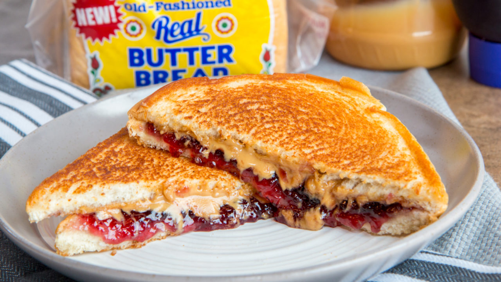

Peanut Butter and Jelly Sammich

Description
Yep. Its a peanut butter and jelly sandwich. But better; like, way better.
Why? because I said so.
Ingredients
- Bread
- Peanut Butter
- Jelly(any flavor)
- Butter(not peanut)
liquid motivation Coffee (optional)
Steps
- Grab 2 slices of bread. Put them on a plate or something, I dunno. Dont use the ends of the loaf, go feed that stuff to a duck or something.
- Spread Peanut butter on one of the slices of bread.
- Spread jelly on the other slice of bread.
- Slap those bad boys together and, honestly, you could stop there; but that's hella vanilla so let's add some spice.
- Heat a non-stick pan on the stove with a medium-low flame.
- Spread butter on both side of the sandwich and toast each side on the pan.
- Enjoy your warm, crispy, delicious PBnJ. Pro-tip: Dip it in some coffee for even more deliciousness.